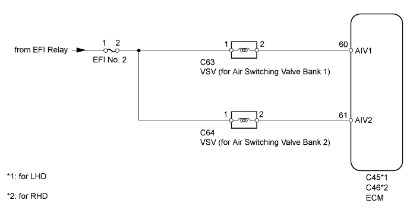
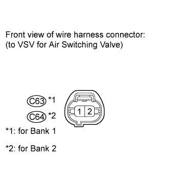
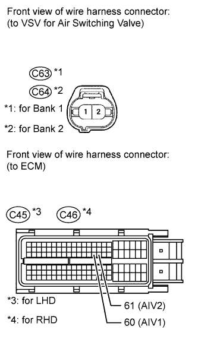
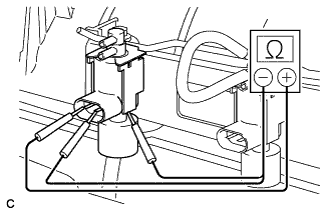
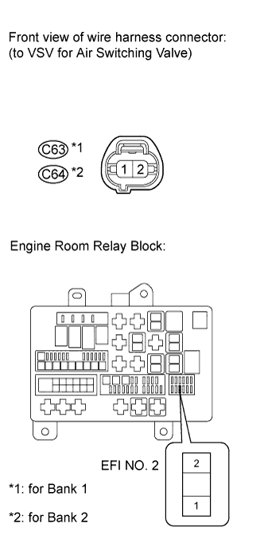

DTC P1440 Secondary Air Injection Vacuum Switching Valve Circuit Malfunction Bank 1 |
DTC P1443 Secondary Air Injection Vacuum Switching Valve Circuit Malfunction Bank 2 |

| DTC Code | DTC Detection Condition | Trouble Area |
| P1440 | The VSV bank 1 voltage is below half of the battery voltage (1 trip detection logic). |
|
| P1443 | The VSV bank 2 voltage is below half of the battery voltage (1 trip detection logic). |
|

| 1.CHECK HARNESS AND CONNECTOR (AIR INJECTION SYSTEM POWER SOURCE) |
 |
Disconnect the VSV for air switching valve connector.
Turn the engine switch on (IG).
Measure the voltage according to the value(s) in the table below.
| Tester Connection | Switch Condition | Specified Condition |
| C63-1 - Body ground | Engine switch on (IG) | 11 to 14 V |
| C64-1 - Body ground | Engine switch on (IG) | 11 to 14 V |
|
| ||||
| OK | |
| 2.CHECK HARNESS AND CONNECTOR (ECM - VSV) |
 |
Disconnect the ECM connector.
Disconnect the VSV for air switching valve connector.
Measure the resistance according to the value(s) in the table below.
| Tester Connection | Condition | Specified Condition |
| C63-2 - C45-60 (AIV1) | Always | Below 1 Ω |
| C64-2 - C45-61 (AIV2) | Always | Below 1 Ω |
| C63-2 or C45-60 (AIV1) - Body ground | Always | 10 kΩ or higher |
| C64-2 or C45-61 (AIV2) - Body ground | Always | 10 kΩ or higher |
| Tester Connection | Condition | Specified Condition |
| C63-2 - C46-60 (AIV1) | Always | Below 1 Ω |
| C64-2 - C46-61 (AIV2) | Always | Below 1 Ω |
| C63-2 or C46-60 (AIV1) - Body ground | Always | 10 kΩ or higher |
| C64-2 or C46-61 (AIV2) - Body ground | Always | 10 kΩ or higher |
|
| ||||
| OK | |
| 3.CHECK VSV (RESISTANCE) |
 |
Disconnect the VSV for air switching valve connector.
Disconnect the 2 vacuum hoses from the VSV.
Measure the resistance according to the value(s) in the table below.
| Tester Connection | Condition | Specified Condition |
| 1 - 2 | Always | 33 to 39 Ω at 20°C (68°F) |
| 1 - Body ground | Always | 10 kΩ or higher |
| 2 - Body ground | Always | 10 kΩ or higher |
|
| ||||
| OK | ||
| ||
| 4.CHECK HARNESS AND CONNECTOR (VSV - EFI NO. 2 FUSE) |
 |
Disconnect the VSV connector.
Remove the EFI No. 2 fuse from the engine room relay block.
Measure the resistance according to the value(s) in the table below.
| Tester Connection | Condition | Specified Condition |
| C63-1 - EFI No. 2 fuse terminal 2 | Always | Below 1 Ω |
| C64-1 - EFI No. 2 fuse terminal 2 | Always | Below 1 Ω |
| C63-1 or EFI No. 2 fuse terminal 2 - Body ground | Always | 10 kΩ or higher |
| C64-1 or EFI No. 2 fuse terminal 2 - Body ground | Always | 10 kΩ or higher |
|
| ||||
| OK | ||
| ||